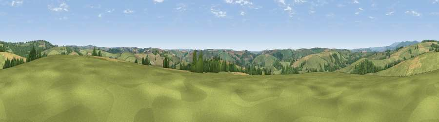

Viewpoint near Aveton Gifford
#18044 in England · top 40% of its area beats it · near Aveton Gifford · path 96 mWhere it is
The exact computed spot (SX 70075 49575). Click the marker for map links.
Public access: the nearest public right of way is about 96 m away — the final stretch may cross private land. Computed from Natural England's CRoW access layer and OpenStreetMap rights of way — not the legal definitive map. Always verify locally.
The view, rendered

A 360° render of this exact spot computed from the terrain model, tree cover and land cover — summer colours, afternoon light, calibrated against photographs of famous viewpoints. Real trees, hedges and buildings will differ in detail.
The panorama
Grey silhouette: terrain skyline in each direction (720 bearings, Earth curvature and refraction included). Dashed green: skyline with trees (+15 m) and buildings (+8 m) as obstacles. Blue strip: how far the ground is visible on each bearing.
Where the view opens
Wedge length = distance to the farthest visible ground on that bearing (vegetation-aware). Rings at 10, 25 and 50 km.
What fills the view
63% grassland · 23% cropland · 14% woodland ·
Angular shares of the visible panorama (visual magnitude), not map area. Landscape diversity 0.41 (0–1 Shannon).
Key numbers
More beautiful places nearby
The staircase of upgrades: each row has a higher view potential than everything closer. Driving times are estimates from straight-line distance, calibrated against real road routing — check an actual route before setting out.
| Place | Direction | Drive | Score |
|---|---|---|---|
| Viewpoint near Loddiswell | NNE · 3 km | ~7 min | 69.4 |
| Viewpoint near Thurlestone | SSW · 6 km | ~13 min | 71.6 |
| Viewpoint near Bigbury-on-Sea | SW · 7 km | ~14 min | 76.8 |
| Viewpoint near Mothecombe | WSW · 8 km | ~17 min | 78.6 |
| Western Beacon | NNW · 9 km | ~18 min | 81.9 |
| Viewpoint near Hope | S · 11 km | ~21 min | 84.4 |
| Viewpoint near East Prawle | SSE · 15 km | ~27 min | 84.6 |
| High Peak | NE · 54 km | ~76 min | 85.3 |
50.33174, -3.82684 · source: screening · position refined by local search. Computed location — check access rights before visiting.